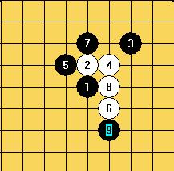

这个9白能胜吗？
首页
五子棋交流
#1 这个9白能胜吗？ 作者：兔子哥哥 发表时间：2009-5-22 2:58:35
QQ游戏中遇到这个9，郁闷了好几盘，不知道这个9白能胜不？谢谢大家！
#2 Re:这个9白能胜吗？ 作者：gerbo 发表时间：2009-5-22 3:35:44
=======上图对应的爱五子棋谱代码如下，以便你拆解：========
h8h9j10i9g9i7h10i8i6k9
====================================================== 这样感觉不错,可以消弱黑的势力.还是属于平衡局面 ,呵呵.
#3 Re:这个9白能胜吗？ 作者：gerbo 发表时间：2009-5-22 4:00:16
=======上图对应的爱五子棋谱代码如下，以便你拆解：========
h8h9j10i9g9i7h10i8i6k9j9j8l10g10j7i11i10k10h11k8k7f8
====================================================== 22我选择这个,黑白都可以战,呵呵.
#4 Re:这个9白能胜吗？ 作者：屏蔽 发表时间：2009-5-22 11:21:52
=======上图对应的爱五子棋谱代码如下，以便你拆解：========
h8h9j10i9j8i8i7g9f9j7g10k9j9j11
======================================================另一个同型分支而已，此变化推荐。
［ gerbo 于 2009-5-22 17:43:27 时花20金币送鲜花一朵］
#5 Re:这个9白能胜吗？ 作者：流逝 发表时间：2009-5-22 15:00:26
 我很负责任的告诉你，必不了
我很负责任的告诉你，必不了